보수 4,000평
- 하우스 면적
- 13,223㎡
- 유효재배면적
- 10,579㎡
- 수량 가정
- 5.5kg/㎡/년
- 예상 생산량
- 58.2t/년
- 매출 참고
- 약 4.65억원
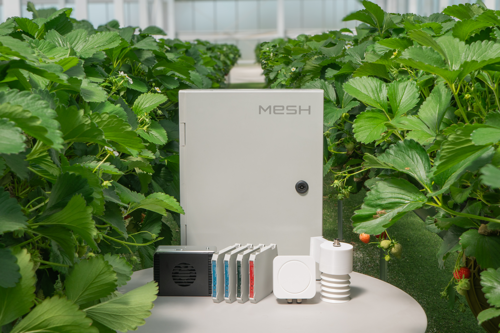
Executive Summary
현재 문의는 순수 생산농장 조성 가능성과 체험·판매·F&B가 결합된 복합문화공간 개발 가능성을 함께 검토하는 상황으로 이해됩니다. 따라서 초기 현장실사 및 고객사 미팅 이후 2주 내 기초 방향성을 제시하고, 기본구상용역과 기본·상세설계, 공사 발주를 분리하는 방식이 적합합니다.
Scope
고객이 영농형 개발과 복합문화공간 개발을 모두 고려하고 있으므로, 처음부터 공사 견적으로 들어가기보다 현장실사 및 고객사 미팅 후 2주 내 기초 방향성을 제시하고, 8주 이내 기본구상에서 개발방향과 시설규모를 정한 뒤 설계·인허가·공사 발주로 넘기는 구조가 적합합니다.
Period
토지 소유권 이전 조건과 농업법인 설립 일정은 별도로 확인하되, 만나CEA 과업은 초기 방향성 제시, 기본구상, 설계·발주 준비로 단계화합니다. 공사 기간은 설계도서, 인허가, 발주 방식, 시공 범위가 확정된 뒤 별도 산정합니다.
Budget
기본구상은 만나CEA 컨설팅 과업으로 수행하고, 기본설계 및 상세설계는 도화엔지니어링과 파트너사 공동수주 구조를 검토합니다. 시설공사는 설계도서와 수량산출 확정 후 만나CEA 및 금속창호면허 보유 협력업체 중심으로 별도 산정합니다.
| 구분 | 예비 비용 범위 | 포함 범위 | 비고 |
|---|---|---|---|
| 컨설팅비 | 2,000만원 | 기본구상용역. 8주 이내 대상지 현황분석, 영농형 개발·농업복합문화공간 도입시설 검토, 기본 배치, 개략사업비, 추진 단계 정리 | 초기 현장실사 및 고객사 미팅 이후 2주 내 기초 방향성 제시 포함 |
| 설계비 | 전체 프로젝트 예산의 5-7% | 기본설계 및 상세설계비. 6개월. 현장조사, 법규검토, 공종별 설계도면, 계산서, 시방서, 수량산출서, 내역서, 인허가 협의자료 | 도화엔지니어링과 파트너사 공동수주 구조 검토. 도화는 도시계획, 조경·레저, 스마트시티, 수자원, 교통, 에너지 등 다분야 엔지니어링 역량 보유 |
| 시설공사비 | 별도 발주 | 온실, 기반토목, 전기·수배전, 양액·관수, 냉난방, 전처리·냉장, 카페·판매장, 조경·주차, MESH 시스템 설치 | 만나CEA 및 협력업체 수행. 온실·금속창호 공종은 금속창호면허 보유 협력업체와 공사 범위별 발주 가능 |
Production Plan
온라인 온실 견적 시뮬레이터의 연동형 단가와 금속창호스터디 폴더의 공종 구조를 기준으로, 기준안은 4,500평 연동형 비닐하우스와 하우스 면적 6% 수준의 전처리·선별·냉장동을 붙여 산정했습니다. 작물은 논산 3,000평 딸기농장 수익분석자료의 9,900㎡ 70.4t 생산 시나리오를 반영했습니다.
| 공종 | 산출 기준 | 금액 | 비고 |
|---|---|---|---|
| 연동형 비닐하우스 구조·피복 | 4,500평 x 387,000원/평 | 17.42억원 | 온라인 견적 시뮬레이터 08-연동-1 기준 단가 |
| 행잉거터·고설베드 | 4,500평 x 120,000원/평 | 5.40억원 | 딸기 고설재배 생산라인 |
| 양액·관수설비 | 4,500평 x 85,000원/평 | 3.83억원 | 양액기, 관수라인, EC/pH 제어 예비 |
| 전기·수배전·MESH | 전기 2.48억원 + MESH 0.55억원 | 3.03억원 | 한전 인입, 수전설비 대공사는 별도 |
| 전처리·선별·냉장 부대동 | 선별·포장 135평 x 200만원/평, 세척·작업 45평 x 200만원/평, 예냉·냉장 67.5평 x 450만원/평, 자재·기계 22.5평 x 250만원/평 | 7.20억원 | 하우스 면적의 6% |
| 예비비 | 직접공사비 x 7% | 2.41억원 | 수량산출 전 단계 리스크 |
Quote Example
carillon.kr 견적내기 화면에서 연동 8m x 97m, 19연동, 측고 3.5m, 딸기, PO필름, MESH 100ch·센서 20점, 측창 자동개폐·다겹보온커튼·차광/스크린·관수/양액 연동 조건으로 산출한 예시입니다. 기존 4,500평 예비 공종표와 면적이 거의 같아 구조·피복 단가 검증용 참고자료로 첨부할 수 있습니다.
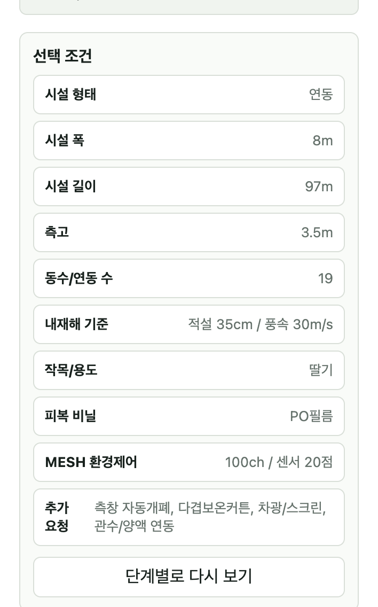
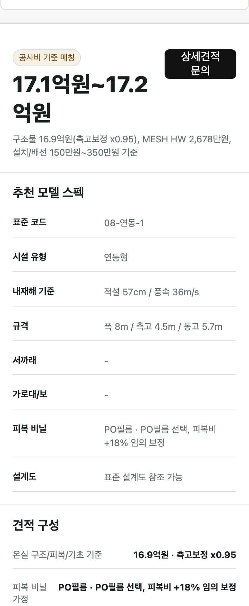
References
만나CEA는 단순 시공사가 아니라 기획, 설계, 구축, 운영데이터, 후속 수주까지 연결하는 통합 사업자로 포지셔닝할 수 있습니다. IR 자료 기준 2024년 매출 69억원, 2026E 매출 80억원 내외, 국내외 스마트팜 및 공공·해외 레퍼런스 120+를 보유하고 있습니다. 특히 충북 진천에 위치한 뤁스퀘어는 연간 방문객 15만명 이상이 방문하는 지역명소로 자리잡아, 농업생산과 복합문화공간 운영 사업 모두에 전문성을 갖추고 있음을 보여줍니다. 또한 샐러딩 브랜드를 통해 마켓컬리와 쿠팡 등 주요 온라인 채널에 유통하며, 상품력과 재구매 기반의 organic 성장을 지속하는 농산물 유통 역량을 보유하고 있습니다.
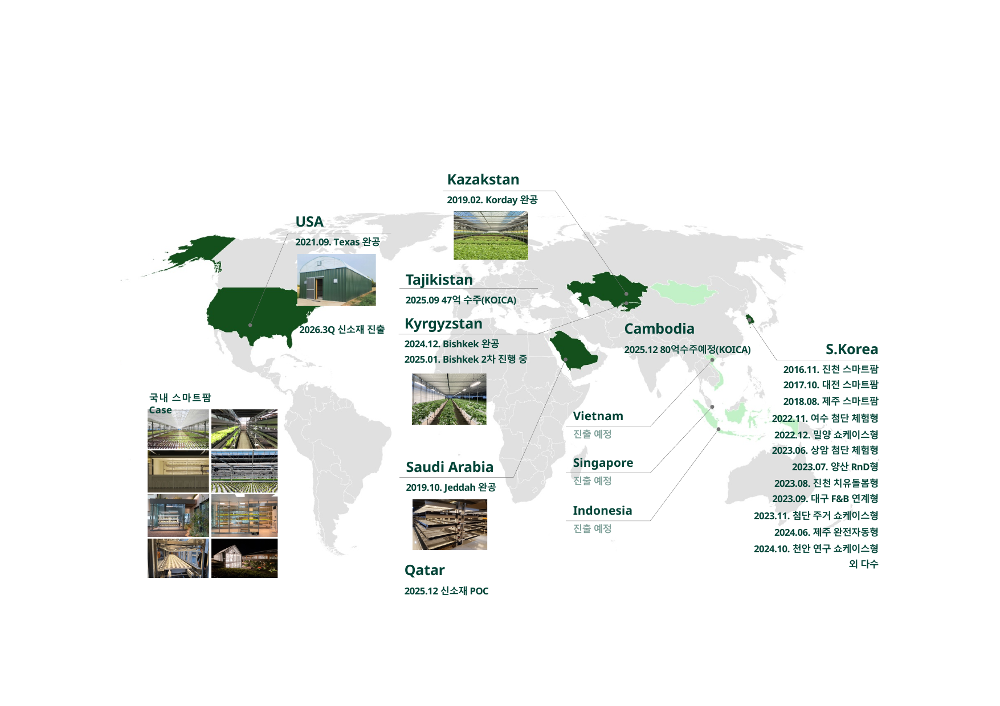
글로벌 9개 프로젝트, 19개 footprint 기록, 국내 6개 후보를 관리 중인 내부 실행 및 투자 커뮤니케이션 사례. 주요 진출·검토 국가: 미국, 카자흐스탄, 타지키스탄, 키르기스스탄, 사우디아라비아, 카타르, 캄보디아, 베트남, 싱가포르, 인도네시아, 한국.
충북 진천 뤁스퀘어의 연 15만명 이상 방문 관광농원 운영 경험을 바탕으로 딸기 재배온실, 스마트팜 쇼룸, F&B, 교육, 팜투어, 제품 판매를 연결하는 공간 운영 사례.
경북 영양 어수리 농장을 대상으로 기본계획 수립, 온실 평면·단면 검토, 구역계 변경, 전문가 자문, 보고자료 정리를 수행한 국내 공공형 과업 사례.
샐러딩 브랜드로 마켓컬리와 쿠팡에 유통 중이며, 상품력·재구매·채널 운영 기반의 organic 성장을 지속하는 농산물 유통 운영 사례.
Root Square Operation
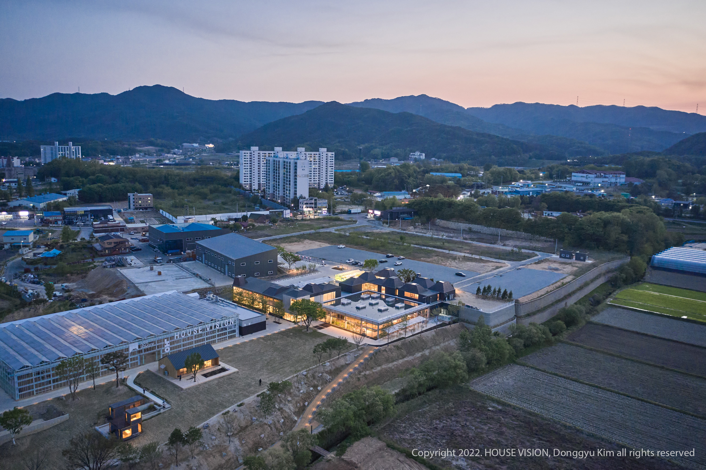
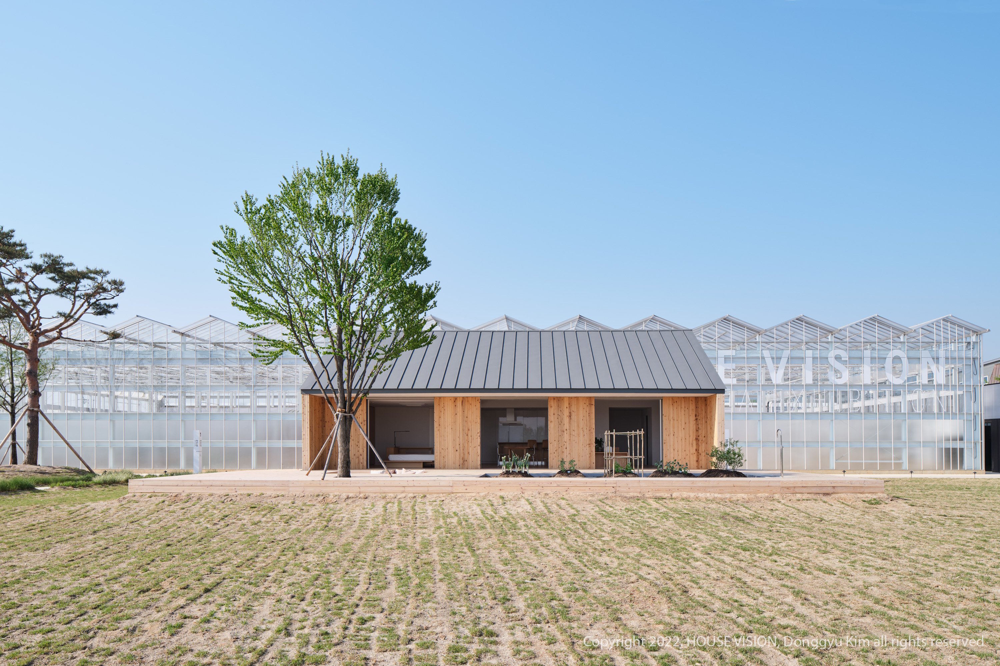
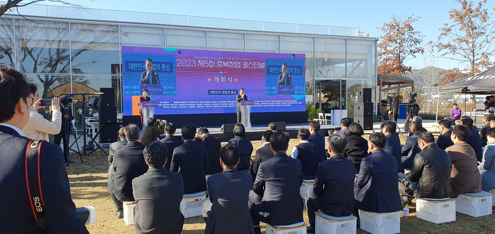
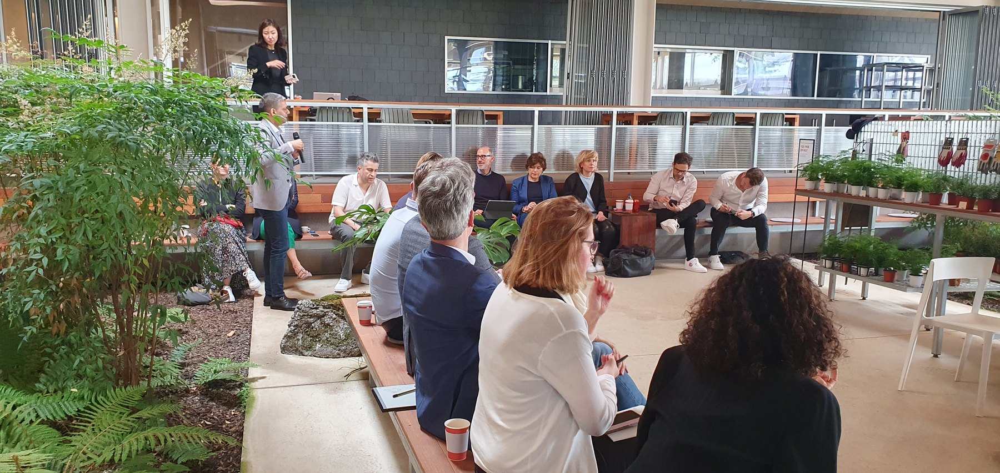
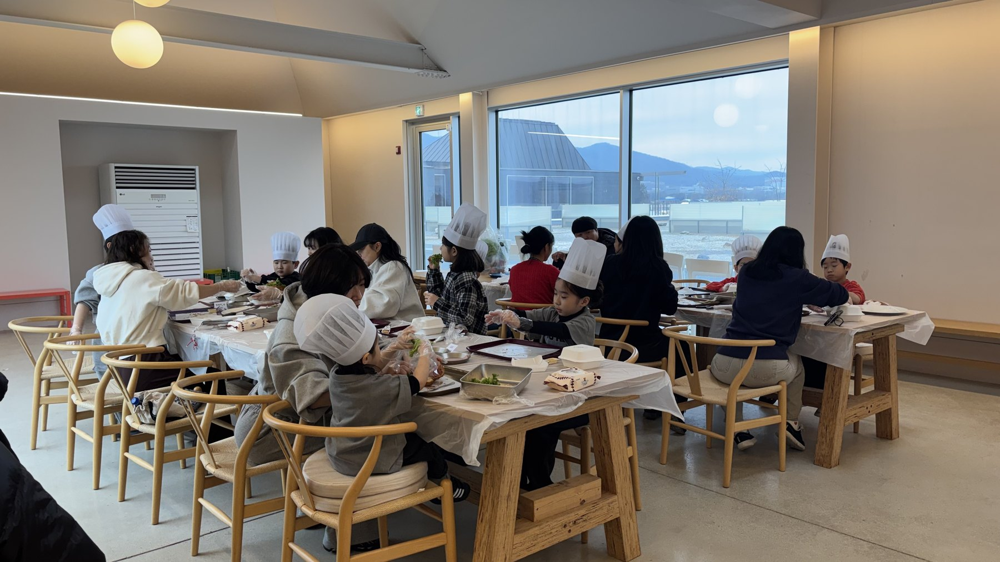
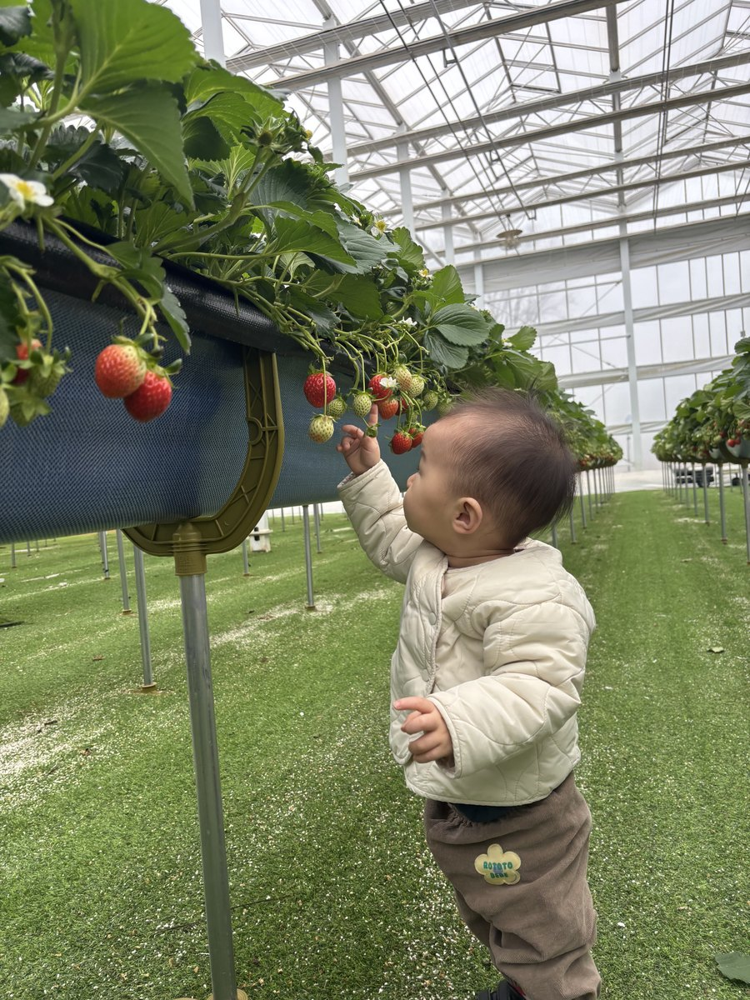
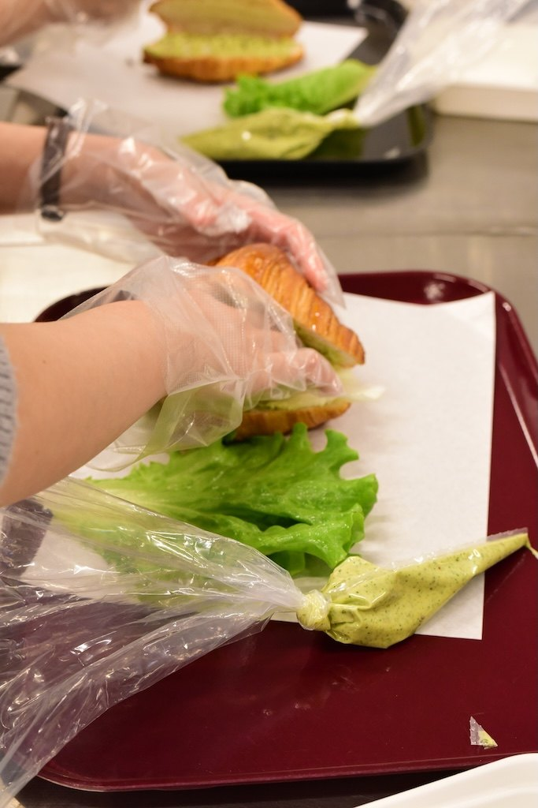
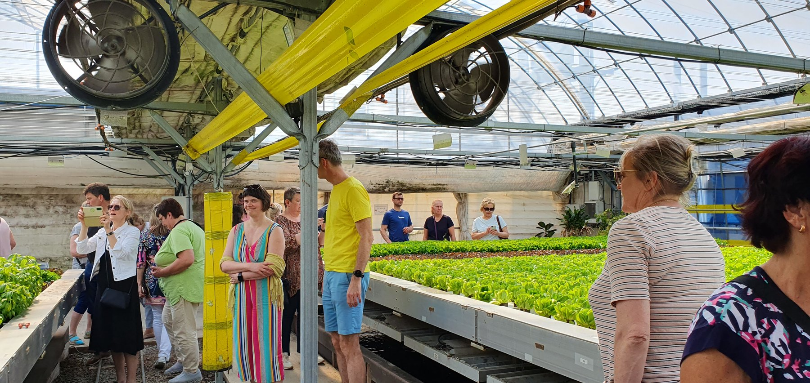
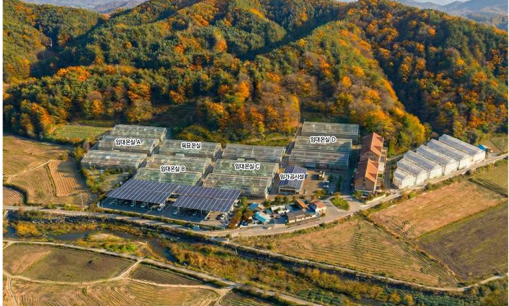
Next Step
현재 정보만으로도 과업 소개와 예비 기간·비용 안내는 가능하지만, 실제 제안서로 전환하려면 고객의 개발 의도와 토지·계약 상태를 먼저 확인해야 합니다.
“울산 울주군 12,000평 부지는 단순 시설 견적보다 토지 소유권 이전, 농업법인 요건, 영농계획, 개발행위 가능성, 운영수익 모델을 함께 검토하는 것이 우선입니다. 만나CEA는 스마트팜 영농개발, 체험·판매형 복합문화공간 기획, MESH 기반 운영시스템, 시설 구축 범위 산정 경험을 바탕으로 1차 검토를 진행할 수 있습니다. 다음 단계로는 고객 인터뷰, 부지 방문, 소유부지 관련 자료 수령을 먼저 진행하고, 초기 현장실사 및 고객사 미팅 이후 2주 내 기초 방향성을 제시드릴 수 있습니다. 이후 기본구상용역은 8주 이내, 2,000만원 기준으로 대상지 현황, 개발방향, 시설규모, 배치안, 개략사업비를 정리하고, 후속 기본설계 및 상세설계는 6개월, 전체 프로젝트 예산의 5-7% 수준으로 별도 제안드릴 수 있습니다. 공사는 설계도서와 수량산출 확정 후 별도 발주가 적절합니다.”